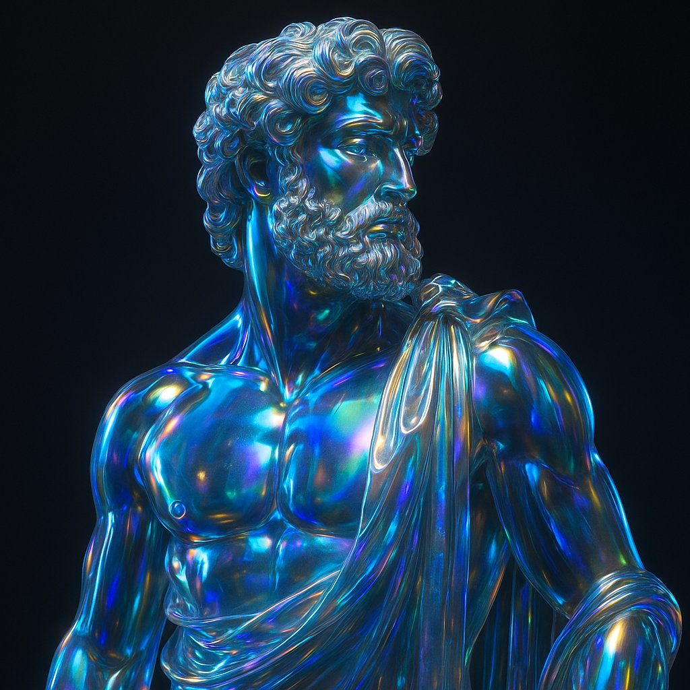

Polybius - Godot MCP Server
Polybius Summary
Polybius is a revolutionary MCP (Model Context Protocol) server that creates a seamless bridge between Claude Desktop and the Godot game engine editor. Through natural language commands, you can now build entire games, manage assets, configure projects, and create complex scenes - all powered by AI.
Architecture Overview:
The system consists of two main components: a GDScript editor plugin that exposes Godot functionality via HTTP API, and a Python MCP server implementing 21+ tools for complete game development workflow. The architecture enables seamless communication: Claude Desktop ↔ MCP Protocol (JSON-RPC 2.0) ↔ Python MCP Server ↔ HTTP API ↔ Godot Plugin ↔ Godot Editor.
Current Features (Phase 2 Complete):
Scene Management (11 Tools): Create scenes with smart root node selection, open existing scenes, manage current scene information, list all project scenes, duplicate scenes with automatic naming, safely remove scene files, add 11+ node types (UI, Physics, Graphics, Audio), remove nodes with safety protection, reparent and reorder scene nodes, read and modify node properties.
Script Management (5 Tools): Generate GDScript files with templates and node attachment, enumerate all project scripts, view and edit script content, safely remove script files.
Asset Management (3 Tools): Import external files (images, audio, models, fonts) with organized storage, browse project resources with filtering and metadata, move/rename assets with reference tracking.
Project Management (3 Tools): Read project.godot configuration, update project settings programmatically, build/export projects with preset management.
Usage Examples:
Once installed, Claude can control Godot through natural language commands like "Create a new 2D platformer scene called 'Level1' with a CharacterBody2D player", "Import these sprites from my Desktop into the textures folder", "Set the main scene to MainMenu.tscn and change the window size to 1920x1080", or "Create a player controller script with basic movement and add a jump mechanic".
Development Status:
Currently featuring 21 implemented MCP tools, 22 functional REST endpoints, support for 11 core Godot node types, and 7 asset categories. The project is actively developed with Phase 3 focusing on UI Management tools including positioning, anchoring, layout management, and theme support.